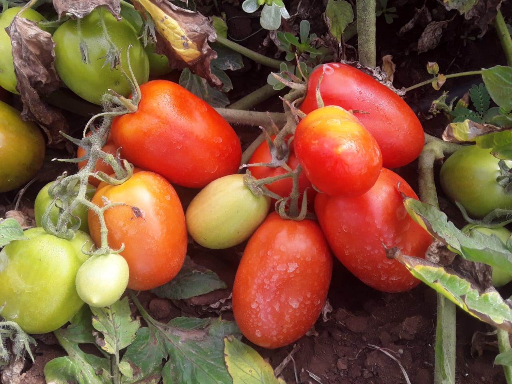
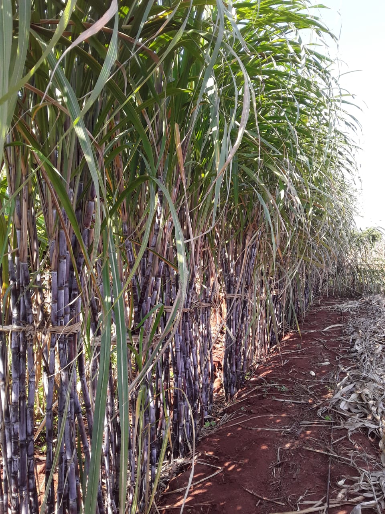
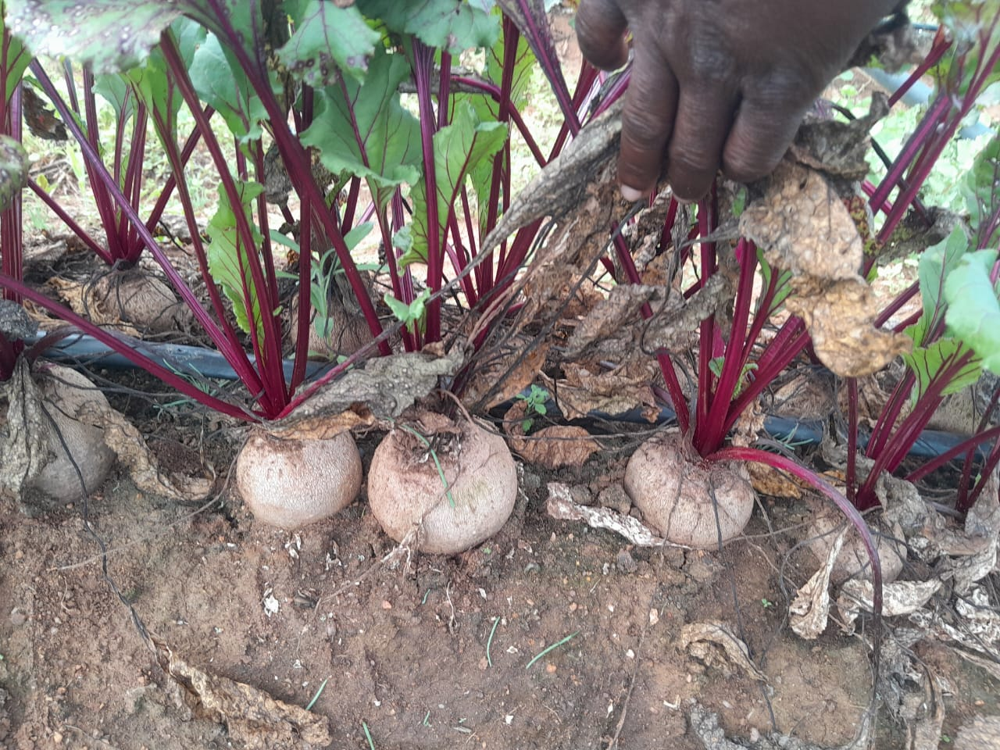

Leafy vegetables
Leafy vegetables
OUR FARM / OUR PRODUCE
Fresh from
our fields.
A closer look at what grows on our land. Explore our harvest, discover every crop, and enquire directly about availability.
Explore produce REAL FARM PHOTOGRAPHY · FRESH PRODUCE
FIELD NOTES / 001
Good food begins in the field.
From crisp leafy vegetables to seasonal fruit and sugarcane, discover the produce
featured in our farm photographs.
Ask about a crop FRESH PICKS / FROM OUR FIELDS
A harvest worth exploring.
01 / EXPLORE OUR PRODUCE
Discover what
we grow.
Select a category or search for a crop. Availability and pricing are confirmed directly with the farm.
Leafy vegetablesFresh harvest
Vegetables
Green Peppers
Green bell peppers shown fresh from harvest.
View Green Pepper Details Enquire about availability
Field grownVegetables
Tomatoes
Tomatoes captured growing and at harvest.
View Tomato Details Enquire about availabilitySeasonal produce
Fruit
Watermelons
Watermelons photographed after harvesting.
View Watermelon Details Enquire about availability
Field cropsField Crops
Sugarcane
Sugarcane growing in the farm fields.
View Sugarcane Details Enquire about availability
Root vegetablesLeafy vegetablesVegetables
Leafy Greens
Green leafy crops from the farm fields.
View Leafy Green Details Enquire about availabilityNo matching produce found
Try another crop name or choose “All produce”.

02 / FROM FIELD TO HARVEST
Grown with care.
Gathered with purpose.
Every harvest starts with time in the field. Browse our farm photographs to see the crops at different stages of growth and collection.
Learn about our farm ↗ASK ABOUT AVAILABILITY
Looking for fresh produce?
Contact GreenFields to discuss current crops, quantities and collection arrangements.